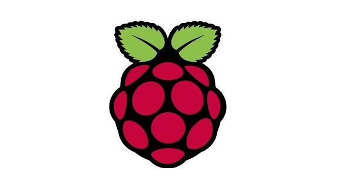
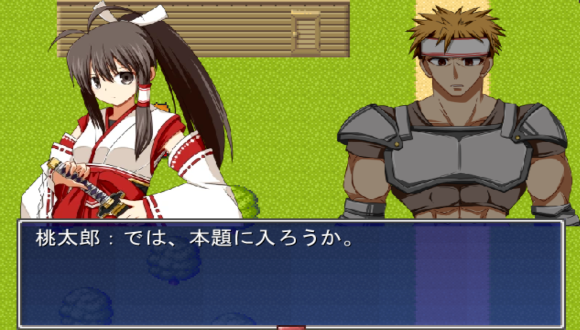
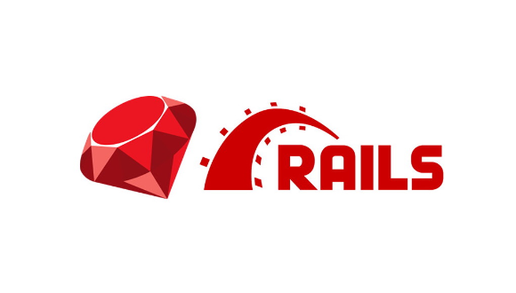
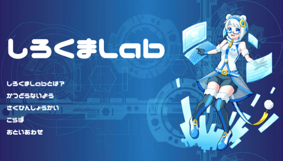

現在しろくまLabには20名近くのメンバーがおり、チームが6つあります！
基本的にはZoomで活動しており、平日の夜に活発に動いています。
しろくまLabではタイムツリーというアプリを使ってスケジュール管理をしています。
チームリーダーがそのアプリでスレッドを立て、参加できる人が参加するというスタイルです。
基本的にはZoomで活動しており、平日の夜に活発に動いています。
しろくまLabではタイムツリーというアプリを使ってスケジュール管理をしています。
チームリーダーがそのアプリでスレッドを立て、参加できる人が参加するというスタイルです。
Pythonチーム

Pythonは機械学習などAI関連のシステムを作ることが出来、これからの時代にはとても大切な言語です。
そこでしろくまLabでは、Pythonを独学で勉強したメンバーを中心に、勉強会を行なっています。
勉強会の内容としては、基本的な文法の学習をした後、顔認証などの機械学習を中心に学んでいく予定です。
学校で習わない言語のため、もし勉強したい人がいれば、ぜひ私たちと一緒に勉強しましょう！
そこでしろくまLabでは、Pythonを独学で勉強したメンバーを中心に、勉強会を行なっています。
勉強会の内容としては、基本的な文法の学習をした後、顔認証などの機械学習を中心に学んでいく予定です。
学校で習わない言語のため、もし勉強したい人がいれば、ぜひ私たちと一緒に勉強しましょう！
試験対策チーム

国家試験などに向けて、不定期に勉強会を実施。
基本情報技術者試験に向けて、使用している参考書は、
「基本情報技術者 午後・アルゴリズム」
「ニュースペックテキスト基本情報技術者」です。
現在、しろくまLabのメンバーは19人中、10人、既に基本情報技術者を取得しています。
そのため、応用情報技術者試験に挑戦している人もいます。
基本情報技術者試験に向けて、使用している参考書は、
「基本情報技術者 午後・アルゴリズム」
「ニュースペックテキスト基本情報技術者」です。
現在、しろくまLabのメンバーは19人中、10人、既に基本情報技術者を取得しています。
そのため、応用情報技術者試験に挑戦している人もいます。
セキュリティ物理チーム

マイコンを使用して、機械制御の学習を実施。
ドローンやラズパイなどを使用し、ロボット開発も予定しています。
情報システム学科2年、コンピュータ制御専攻のプロフェッショナル3人が主になって実施しています。
ドローンやラズパイなどを使用し、ロボット開発も予定しています。
情報システム学科2年、コンピュータ制御専攻のプロフェッショナル3人が主になって実施しています。
ゲーム製作チーム

授業で習ったプログラミング言語の知識や、各自が自主的に勉強したことを用いて、オリジナルのゲームを製作しています。
また、初心者向けのノーコードでゲーム制作ができるツールを使った開発も行っています。
開発したゲームは、このHPを通して遊ぶこともできますので、「さくひんしょうかい」のページでplayしてみてください！
また、初心者向けのノーコードでゲーム制作ができるツールを使った開発も行っています。
開発したゲームは、このHPを通して遊ぶこともできますので、「さくひんしょうかい」のページでplayしてみてください！
Webアプリ開発チーム

Ruby on RailsやFirebaseなどを使用して、Webアプリを開発するチームです。
現在は、学校専用のSNSを開発したり、railsで好きなアプリを作ったりしています。
将来的には、React.jsやVue.jsなどを使用して、モダンなフロントエンド開発もしていきたいと考えています。
現在は、学校専用のSNSを開発したり、railsで好きなアプリを作ったりしています。
将来的には、React.jsやVue.jsなどを使用して、モダンなフロントエンド開発もしていきたいと考えています。
HP製作・更新チーム

2020年9月の再始動を記念して、しろくまLabのHPを作りました。
このHP制作は情報システム学科、モバイルアプリ開発専攻のメンバーが中心となって作っています。
学校で勉強した、html、css、JavaScriptに加え、自分たちで勉強した知識も入れました。
しろくまLabの活動や作品紹介をこのHPに載せていきますので、よろしくお願いします。
このHP制作は情報システム学科、モバイルアプリ開発専攻のメンバーが中心となって作っています。
学校で勉強した、html、css、JavaScriptに加え、自分たちで勉強した知識も入れました。
しろくまLabの活動や作品紹介をこのHPに載せていきますので、よろしくお願いします。
藤井先生主体プロジェクト
藤井先生主体のプロジェクトは3つあります。
①GASを使用した、Googleカレンダー登録システムの開発
②Javaの基本文法、ミニアプリの作成
③VRを使用した、しろくまLabイメージキャラクター案件
①GASを使用した、Googleカレンダー登録システムの開発
②Javaの基本文法、ミニアプリの作成
③VRを使用した、しろくまLabイメージキャラクター案件